St Claire's
C1: Wheathampstead House Gates, B653, Wheathampstead
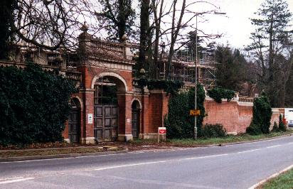
THE
BARON: Roundabout
(Robert Tronson: August 1966)
The Baron parks his Jensen by the gates of the Chateau de Luc and is
taken into the estate by Jeanne Varda. Samantha arrives with the police
and they enter the grounds.
C2: Mackerye End, Wheathampstead
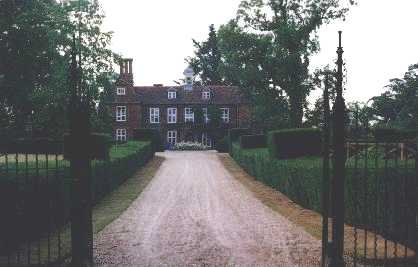
THE
BARON: Enemy of the
State (Jeremy Summers: December 1965)
The Baron arrives at Bradfield's house. Later he returns in a white
Citroen with a secret policeman he has captured.
C3: St. Albans, Hertfordshire
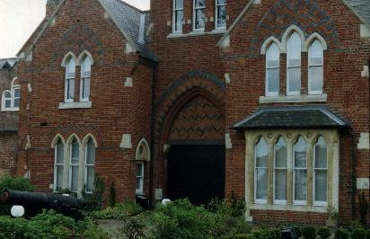
INTERNATIONAL
DETECTIVE: The Conway
Case
An infamous con man is released from prison. (former
St.
Albans Jail on Grimston Street).
St Claire's
THE
SAINT:
The
Chequered Flag
(Leslie Norman: February 1965)
Lee and
Simon do to visit Hunter
at his boarding house (St Claire's, 38-40 Church Crescent).
(Identified by Sietse Postma, July 2023)
THE
SAINT: The Man Who
Liked Lions (Jeremy Summers: July 1966)
Fishpool Street appears on back projection as Franco drives Simon
Templar through Rome in his taxi to a meeting with Rudolpho Beireeni.
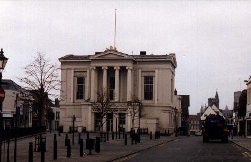
THE
BARON: The Man Outside
(Roy Baker: September 1966)
Mannering and Cordelia arrive in the Jensen at Scottish town to attend
the inquest into Douglas McKrae's death. They drive along a street
(Chequer Street) to the court house (St.
Albans Town Hall) where they
park. After the inquest they leave (along Market Place)
and are
followed by Vince in his car.
THE
CHAMPIONS: The Final
Countdown (John Gilling: Early 1968)
In Hamburg, a German pilot is kidnapped by as he leave his
flat (Civic Centre on Bricket Road, redeveloped 2009).
(Identified by Geoff Dodd, April 2022).
THE
CHAMPIONS: Nutcracker
(Roy Ward Baker: February 1968)
After leaving the tailor’s shop Craig follows Richard’s car in his car,
Richard looks back to make sure Craig is following (junction
of
Stonecross, Saint Peters Street and Harpenden Road).
(Identified by Andy Lawrence, February 2010).
DEPARTMENT S: The Man in the Elegant Room
(Cyril Frankel: Spring 1968)
An estate agent takes his client to see a warehouse property in
Islington (Hedley Road, Saint Albans, starting off in
Islington’s
Market
Road. Site redeveloped). They arrive at the warehouse.
(Identified by Andy Lawrence, July 2011).
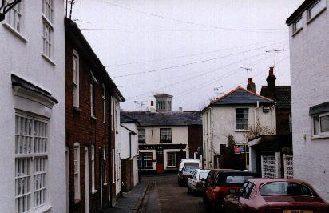
THE
AVENGERS: The Morning
After (John Hough: October 1968)
Steed (Patrick Macnee) and Merlin (Peter
Barkworth) handcuffed together
make their way through the deserted town after Steed's white Rolls
fails to get through the blocked streets (they walk by: St.
Albans
Cathedral, Sumpter Yard, The Blue Anchor, Albert Street, Portland
Street, Key Field Terrace, Dagnall Street, Fishpool Street, Queen
Street, Thorpe Road, Black Cut, Well Close and Old London Road).
RANDALL
AND HOPKIRK [DECEASED]: The
Smile Behind the Veil (Jeremy Summers: Autumn
1968)
Jeff Randall goes to visit Mr. Brookes the solicitor's chambers (house
at the top of Romeland Hill opposite the Abbey gatehouse), in
order to
find out the whereabouts of Dyson. As he leaves in his Vauxhall he is
followed by Grant.
THE
NEW AVENGERS: Last of
the Cybernauts...?? (Sidney Hayers: May 1976)
Malov (Oscar Quitak) waits outside the prison (former
St. Albans Jail
on Grimston Street) for Frank Goff (Robert
Gillespie) to be released.
INSPECTOR
MORSE: Masonic
Mysteries (Danny Boyle: 1989)
Morse (John Thaw) and Lewis (Kevin
Whately) discuss De Vries outside
the Cathedral before visiting Marion Brooke (Diane Fletcher).
Later
they talk together in the Cathedral Square.
INSPECTOR
MORSE: The Sins of the
Fathers (Peter Hammond: 1989)
Morse (John Thaw) takes Lewis (Kevin
Whately) for a drink at The
Fighting Cocks on Abbey Mill Lane to discuss the case.
INSPECTOR
MORSE: Fat Chance
(Roy Battersby: 1990)
Chief Inspector Morse (John Thaw) and Det. Sgt.
Lewis (Kevin Whately)
talk about the case over a pint in the gardens of an Oxford pub.
Television:
CALLAN: The Richmond File: Do You Recognise the
Woman? (1972)
PORRIDGE St. Albans
Jail is H.M. Prison Slade (1974-77)
C4: Redbournbury Treatment
Plant, Watling Street, nr. Redbourn
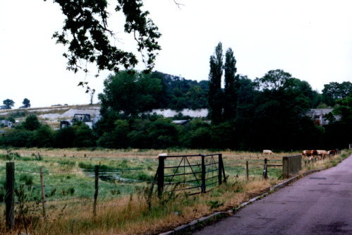
GIDEON’S
WAY: The Firebug
(Roy Baker: September 1964)
Tom Bishop (George Cole) goes to the quarry on his
scooter to steal
explosives. As he leaves he is spotted by Bill White (Joby
Blanshard).
Later (Brian Weske) goes to Mr White to make a bet.
THE
BARON: The Persuaders
(Leslie Norman: October 1965)
Verity Montand (Georgina Ward) arrives in a white
Triumph to meet her
confederates at Anglo Lime Works' Hillfield Quarry. Markham (Reginald
Jessup) goes to meet Templeton-Green (Colin Gordon)
and The Baron
(Steve Forrest) when they arrive at the lime works
in a Volkswagen
camper and they prepare to meet David's kidnappers. Two secret agents
pretending to be a courting couple are parked outside the main
entrance. Verity arrives at the lime works, she collects the money and
prepares to leave. A helicopter arrives but flies off when
Templeton-Green's men arrest Verity.
C5: The Crooked Chimney, Marford Road, Lemsford, Welwyn Garden City
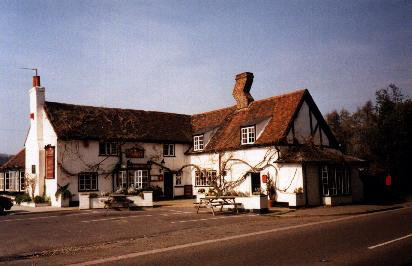
INSPECTOR
MORSE: Who Killed
Harry Field? (Colin Gregg: 1990)
Sergeant Lewis (Kevin Whately) and Morse (John
Thaw) visit the pub
where Harry's bike has been found by a patrol man (Sean
Cranitch) to
interview the landlord (David Belcher).
C6: Brocket Hall, Marford
Road, Lemsford, Welwyn Garden City
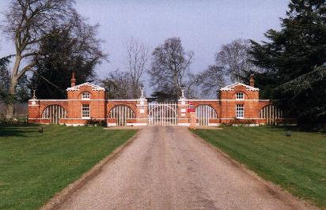
THE
AVENGERS: Split!
(Roy Baker: January 1968)
Steed and Tara arrive at The Ministry of Top Secret Information.
THE
AVENGERS: The
Interrogators (Charles Crichton: October 1968)
Tara arrives with Col Mannering (Christopher Lee)
and Captain Soo
(Cecil Cheng) for a special course. Later Steed
arrives at the mansion,
but he is expected.

Brocket Hall
PROFFESIONALS:
Mixed Doubles (Roger
Tucker: 1979)
Cowley (Gordon Jackson) takes Bodie (Martin
Shaw) and Doyle (Martin
Shaw) to Venue One to check security.
INSPECTOR
MORSE: Who Killed
Harry Field? (Colin Gregg: 1990)
Sergeant Lewis (Kevin Whately) is led by Morse (John
Thaw) into the
grounds of Eirlis' estate. Morse drives up to the house observed by
Paul Eirlis (Vania Vilers) who is racing Roger
McMill (Jeremy Clyde) on
his bike. Lewis interviews the security guard, Drummond (Dicken
Ashworth), at the gate while Morse interviews Eirlis, his
secretary
(Anna Patrick) and his man servant, Carl (Stephen
Grothgar). After the
death of Eirlis, Sgt. Taylor (Steven Payne) asks
Lewis to put in good a
word for him to Morse.
Film:
HAPPY EVER AFTER
(1954)
LADY CAROLINE LAMB
(1972)
AGATHA CHRISTIE'S MURDER WITH
MIRRORS (1985)
HIGHLANDER (1986)
A KISS BEFORE DYING
(1990)
Television:
CLARISSA (1991)
C7: Farm, Wilkins Green Lane, Wilkins Green
THE
CHAMPIONS: The Night
People (Robert Asher: June 1967)
Sharron (Alexandra Bastedo) passes a farm on the
way to 'The King's
Head' inn in her blue convertible.
C8: The Plough, Sleapshide Lane, nr. Colney Heath
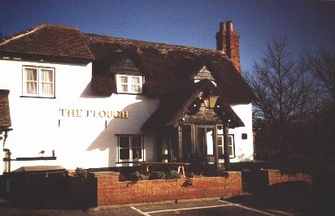
THE
CHAMPIONS: The Night
People (Robert Asher: June 1967)
Sharron (Alexandra Bastedo) arrives at 'The King's
Head' inn in her
blue convertible. Richard (William Gaunt) and Craig
(Stuart Damon)
arrive in a white sports car in their search for Sharron.
C9: Viaduct, East Hyde, nr. Harpenden
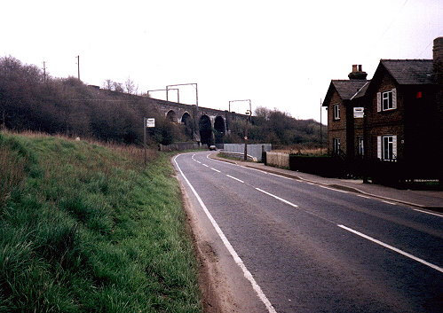
THE
BARON: Enemy of the
State (Jeremy Summers: December 1965)
Colonel Bucholz drives his white Beetle under the viaduct on his way to
meet Mannering at the border.
C10: Sun Lane/High Street, Harpenden
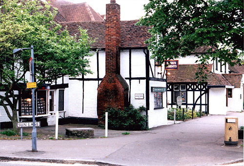
THE
BARON: Countdown
(Robert Asher: October 1966)
Mannering stops off at the local estate agency to pick up the keys for
Parkstone House.
C11: Luton Hoo, Park
Street, Luton
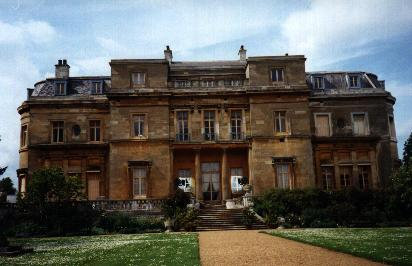
INSPECTOR
MORSE: Second Time
Around (Paul Wheeler: 1990)
Chief Inspector Morse (John Thaw) talks over the
case with Chief
Inspector Patrick Dawson (Kenneth Colley) in the
gardens of a venue for
the Oxford Arts Festival.
Films:
NEVER SAY NEVER AGAIN
(1983)
FOUR WEDDINGS AND A FUNERAL
(1993)
PRINCESS KARABOO
(1993)
Television:
ELLIS ISLAND (1987)
THE GLAM METAL DETECTIVES
(1995)
OLIVER TWIST (1981)
Q.E.D.: The Great Race
(1982)
MURDER MOST HORRID: Dying Live (1996)
RANDALL & HOPKIRK (DECEASED):
Mental Apparition Disorder
(1999)
C12: Luton Hoo Station,
nr. East Hyde, Luton, Bedfordshire
(demolished)
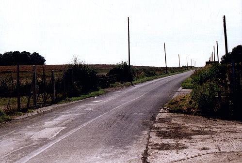
THE
BARON: Enemy of the
State (Jeremy Summers: December 1965)
Bradfield (Gary Watson) drives up to the station
and overpowers the
station master. Ernst Rishner (Brian Phelan), in
his red Volkswagen,
follows Szoblik's limousine to the station with the Baron riding on the
boot. The Baron sabotages the car when it stops at the crossing. The
men kidnap Szoblik (Anton Diffring) when he tells
his chauffeur to get
out and find out what is wrong with the car.
C13: South Hatfield
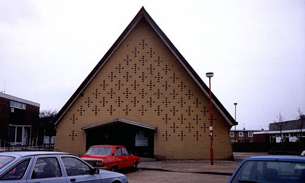
DANGER
MAN: Colony Three
(Don Chaffey: July 1964)
John Drake (Patrick McGoohan), posing as a clerk
named Fuller, arrives
in Hampden new town on a double-decker bus with James Randall (Glyn
Owen) and Janet Wells (Catherine Woodville).
They are met by Richardson
(Peter Arne) who shows them around. The following
day Drake is welcomed
to the village by a student (George Mikell) whilst
he is being taken to
the Citizens Advice Bureau by Richardson.
C14: Copt Hall Road, nr.
Luton Hoo
51°51'25.14"N, 0°22'39.26"W
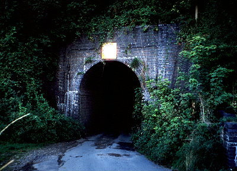
THE
BARON: Countdown
(Robert Asher: October 1966)
Whilst driving to a meeting in the Jensen , Mannering (Steve
Forest)
and Cordellia are tricked into driving into a tunnel beneath railway by
Hamilton (??), Allan Yates (??)
and Compton (Philip Locke). Whilst
Cordellia hides in the car Mannering plans their escape.
(Spotted by Jon Scott: 1980)
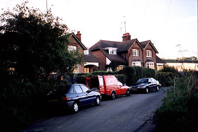
THE
CHAMPIONS: Full Circle
(John Gilling: September/October 1967)
Whilst driving in the country, Sharron Macready picks up two
hitchhikers. When they begin to 'take liberties' with her she disposes
of them in a railway tunnel.
(Spotted by Jon Scott: 1980)
THE
SAINT: The Queen's
Ransom (Roy Baker: April 1966)
After taking the road to Brunnen rather than the airport Simon Templar
and Queen Adana become suspicious of their chauffer (back
projection of
the B653). Before Simon can smash his way through to take
control of
the car the chaffer drives into a railway tunnel where a yellow Ford
van traps them. Eventually Simon and the Queen manage to escape.
(Spotted by Jon Scott: 1980)
THE
ADVENTURER: Has Anyone
Here Seen Kelly (Val Guest)
Gene Bradley (Gene Barry) is driving and is being
followed by two men
in a helicopter. He stops in the tunnel and the helicopter lands
allowing one of the men to investigate. He discovers Bradley's car is
empty but Gene is hiding behind the back wheels, trips him up and
wrestles him to the floor.
(Spotted by Jaz Wiseman, January 2005)
C15: Luton Airport, Luton
THE
SAINT: Queen's Ransom
(Roy Baker: April 1966)
Simon Templar (Roger Moore) and Queen Adana (Dawn
Adams) fly into
Zurich Airport to collect her jewels. They are met by a chauffer who
drives them into town in a limousine. They are followed by a yellow
Ford van.
(Spotted by Jon Scott,1980)
THE
AVENGERS: The
Superlative Seven (Sidney Hayers: March 1967)
Mrs Peel (Diana Rigg) drives Steed (Patrick
Macnee) in her Lotus to the
plane that is to take him to party taking place somewhere over the
south of England. He is met by a Stewardess (Margaret Neale)
who
welcomes him aboard. Other guests include Mark Dayton (Brian
Blessed)
and Hanna Wilde (Charlotte Rampling).
(Spotted by Ivor Williams and confirmed by Jon Scott,,
November 2002)
THE
SAINT: Vendetta for
The Saint (Jim O’Connolly: December, 1967)
Simon Templar (Roger Moore) takes off by helicopter
from Naples and is
flown to Capri. Later he flies back to Naples. Later Simon books a
flight from Milan to Palermo from Milan Airport. Later Allessandro
Destamio (Ian Hendry) arrives at Palermo Airport
with Lilly (Aimi
McDonald) and his men for a meeting with other mafia families.
(Spotted by Jon Scott: 2003)
DEPARTMENT
S: Duplicated Man
(Paul Dickson: March 1969)
Luton Airport: Gerald drops Mr. Henry off at Gatwick Airport and he
boards his plane for Paris. Happy that Annabelle Hurst has left in the
plane, Gerald drives away in his limousine.
THE
PROTECTORS: Triple
Cross (John Hough: 1971)
A Securicor Van is waiting by the private plane as Harry (Rober
Vaughn), the Contessa di Contini (Nyree Dawn Porter)
and Charlie (John
Neville) arrive to receive the cargo of precious stones.
Gregor Cofax
(Peter Bowles) and Cofax’s security man (Del
Henney) are already
waiting for them.
THE
PROTECTORS: The Last
Frontier (Charles Crichton: 1972)
Harry Rule (Robert Vaughn) and John Eastbrook (William Lucas)
arrive at the airport to meet Dr Irena Gayevska (Hildegard Neil) and
Caroline (Nyree Dawn Porter). Jones Jeffries (Peter Cellier) and
another British agent (Alan Harris) are also waiting for Irena.
(Spotted by Geoff Dodd, January 2024)
THE
PROFESSIONALS: No Stone
(Chris Burt: 1981)
George Cowley (Gordon Jackson), Bodie (Lewis
Collins) and Ray Doyle
(Martin Shaw) go to the airport to capture Ulrike (Sarah
Neville) and
her gang (Michael Praed, James Simmons and William McBain).
C16: Luton Midland Station
and Luton Bute Street Station Railway Sidings
(now demolished)
THE
BARON: Countdown
(Robert Asher: October 1966)
The Baron is taken to a freight yard and held captive in an empty goods
wagon. Cordellia watches from the Jensen as Mannering is led away.
(Spotted by Jon Scott: December 2002)
C17: Oaklands College,
Smallford Campus, Hatfield Road, St. Albans
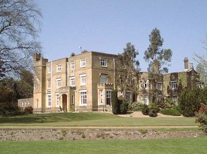
THE
AVENGERS: The
Grave-Diggers (Quentin Lawrence: March 1965)
Establishing shot of the house of Sir Horace Winslip.
(Identified by Ivor Williams: April 2003)
C18: The Wicked Lady, Nomansland
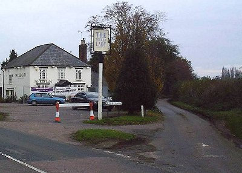
THE
SAINT: The Bunco
Artists (Peter Yates: 1962)
A woman calling herself Amelia Wades arrives at The Wellington Inn, a
small county pub near Netherdon, and checks in. Later Henderson, a
detective arrives looking for her.
C19: Church End, Sandridge
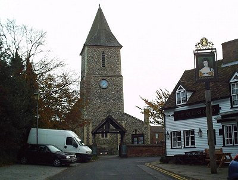
THE
SAINT: The Bunco
Artists (Peter Yates: 1962)
Amelia Wades arrives in the village of Netherdon, she stops to admire
the church (St. Leonards) and drives on. Later she
visits the church to
make an extraordinarily generous offer. After she leaves a detective
arrives with news that the offer is too good to be true.
C20: Mile House Lane, St. Albans
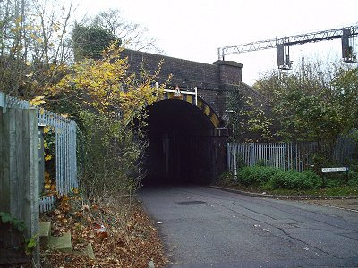
RETURN
OF THE SAINT: Title
Sequence (??: 1978)
After being chased by a thug the stick figure escapes by jumping from a
railway bridge onto a passing truck.
(Location identified by Jaz Wiseman and located by Wyn
Roberts,
November 2004)
C21: Redbourn
GIDEON'S
WAY: The Firebug
(Roy Baker: September 1964)
Tom Bishop (George Cole) stops off on his scooter
at the local village
stores (Redbourn High Street) to collect a
newspaper.
(Spotted by Jaz Wiseman, January 2006)
C22: M1 Junction 8
THE
SAINT: Marcia
(John Krish: 1963)
Simon Templar drives to Birmingham from London to interview Frank Landon
GIDEON’S
WAY: Boy With Gun
(Jeremy Summers: May 1965)
After an argument with his father Chris Kirk stows away on a lorry
heading North on the motorway.
THE BARON:
Diplomatic Immunity (Leslie
Norman: August 1965)
Marlowe is driving John Mannering from the airport in the Jensen. They
discuss the stolen Faberge item and discover it has not been insured
(driving south from Junction 8).
C23: B651 near Wheathampstead
RETURN
OF THE SAINT: Title
Sequence (??: 1978)
The animated stick man jumps from the top of a lorry into an
over-taking sports car.
(Spotted by Jaz Wiseman, 2005)
C24: Bishops Rise, South Hatfield
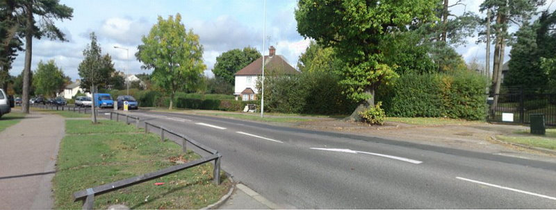
UFO: Confetti Check A-O.K.
(David Lane: November 1969)
An ambulance carries Mary Straker to hospital (Bishops Rise
near the
junction with Hilbury).
(Identified by Geoff Dodd, October 2009)
C25: Redbournbury
THE
PROTECTORS: Triple
Cross (John Hough: 1971)
Using the Contessa’sradio tracking van, Harry and the Contessacross a
ford and pass through a farm (Redbournbury Lane and Beeson
End Lane) as
they home-in on Charlie’s signal.
(Identified by Andy Lawrence, February 2010).
C26: M1 Junction 10
THE
SAINT: Marcia
(John Krish: 1963)
Simon Templar drives to Birmingham from London to interview Frank Landon
C27: Lilley, Luton
THE
AVENGERS: The
See-Through Man (Robert Asher: November 1966)
Mrs Peel drives off in her Lotus after her encounter with Eleneand
Ackroyd but she is pursued by Vazin’s Jaguar (along Hexton
Road). The
Jaguar slides on a corner and comes to a stop. Mrs Peel sees that the
driver of the car has no head before he drives away.
(Identified by Jon Mayers, April 2014)
C28: Forte Post House Hotel, Breakspear Way, Hemel Hempstead (site redeveloped as a Holiday Inn)
THE
BARON: The Seven Eyes
of Night (Robert Asher: April 1966)
John Mannering is in France to buy "The Seven Eyes of Night". As he
arrives in his Jensen at this motel and is watched by Jeff Walker and
Vevel who later attempt to steal the jewels from Mannering.
(Identified by Andrew Pearce, April 2017)
C29: Old London Road Railway Station, Orient Close, St. Alban's
THE RETURN OF THE SAINT:
Yesterday's Hero (Roy
Ward Baker: 1978)
Simon Templar (Ian Ogilvy) follows Roy Gates (Ian
Hendry) to a scrap yard (formerly Chris Wilkinson’s
army surplus
vehicles yard) where Gates attempts to provoke Templer to
shoot him.
(Identified by Mike Smith, January 2023)